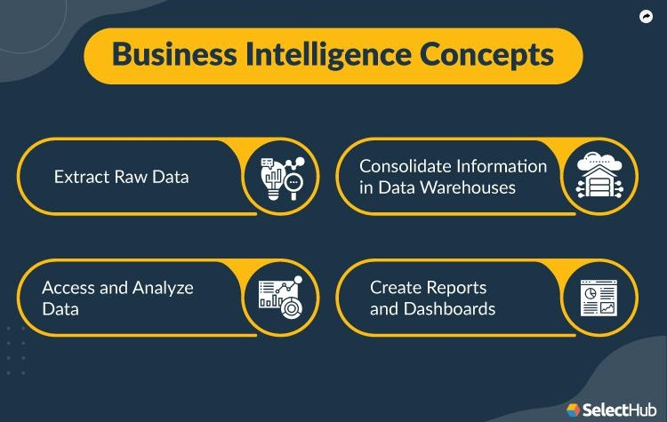
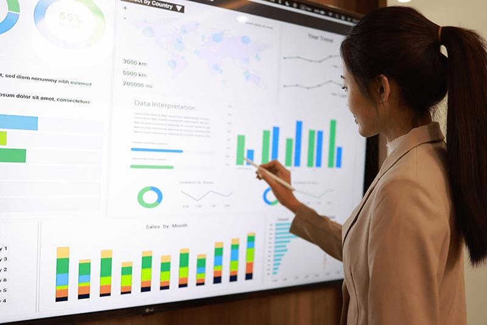
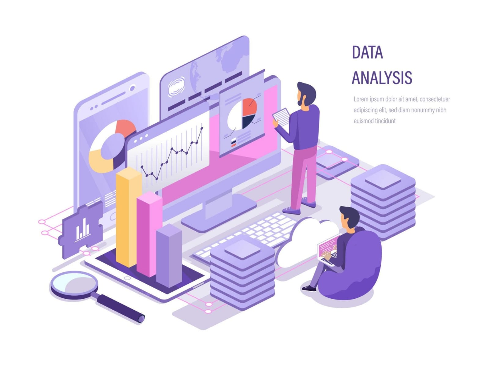

Inteligência de Negócios - BI
O que é BI e por que ele é importante?

Conceito de Inteligência de Negócios
Inteligência de Negócios (em inglês, Business Intelligence ou BI) é
um conjunto de estratégias, tecnologias, processos e ferramentas
usados pelas empresas para coletar, organizar, analisar e transformar
dados brutos em informações estratégicas e acionáveis.
Transformação de dados em informações

1. O Pipeline de Transformação (Dados - Informação)
O processo não é mágico, mas sim uma sequência lógica (pipeline)
de etapas:
- Coleta (Extração): Reunião de dados brutos de fontes diversas, como sistemas internos (ERP/CRM),
APIs, bancos de dados e planilhas.
- Limpeza e Tratamento: Remoção de inconsistências, dados duplicados ou corrompidos, e padronização
de formatos (ex: datas e moedas).
- Modelagem (Transformação): Estruturação dos dados para análise, cruzando bases diferentes para criar valor.
- Visualização (Informação): Apresentação dos dados modelados em dashboards interativos e relatórios analíticos,
tornando-os compreensíveis.
2. Principais Etapas para Implementação
Para transformar dados em inteligência de negócios, as empresas geralmente seguem estes passos:
- Desenvolver uma cultura Data-Driven: Focar na tomada de decisão orientada por dados.
- Definir estratégias e KPIs: Estabelecer quais perguntas de negócio precisam ser respondidas.
- Automatizar respostas: Utilizar ferramentas de BI (como Power BI, Tableau) para atualizar dados automaticamente.
- Análise de Dados: Aplicar análises descritivas (o que aconteceu), diagnósticas (por que aconteceu), preditivas (o que
vai acontecer) e prescritivas (como fazer acontecer).
Importância para empresas

A Inteligência de Negócios (Business Intelligence - BI) é fundamental para empresas modernas, pois ela permite aumentar a
eficiência operacional, reduzir custos, identificar novas oportunidades de mercado e antecipar tendências, garantindo vantagem
competitiva.
Principais Importâncias e Benefícios do BI:
- Tomada de Decisão Assertiva: Substitui o "achismo" por dados, utilizando análises para guiar decisões, desde o nível
operacional ao estratégico.
- Eficiência Operacional e Redução de Custos: Identifica gargalos, ineficiências e desperdícios nos processos internos,
permitindo correções preventivas.
- Vantagem Competitiva: Ajuda a analisar concorrentes, comportamento do consumidor e tendências de mercado, permitindo
ações proativas.
- Aumento de Receita: Facilita a identificação de padrões de vendas, melhorando estratégias de marketing e precificação.
- Visibilidade e Monitoramento: Fornece painéis (dashboards) interativos e automatizados que acompanham indicadores chave de
desempenho (KPIs) em tempo real.
Como o BI ajuda na tomada de decisões
Ele auxilia na tomada de decisões ao permitir análises rápidas de tendências, identificação de padrões de consumo, monitoramento
de KPIs em tempo real e previsão de cenários futuros, reduzindo o risco e a subjetividade.
- Decisões Baseadas em Fatos: Substitui o "achismo" por dados precisos e atuais, fundamentando escolhas em informações confiáveis.
- Visão Unificada (Dashboard): Consolida dados de diversas fontes (ERP, CRM, financeiro) em um só lugar, permitindo uma visão holística do negócio.
- Identificação de Oportunidades e Riscos: Revela tendências de mercado, comportamentos do consumidor e gargalos operacionais antes que se tornem problemas.
- Velocidade na Resposta: Com dados em tempo real, os gestores podem agir rapidamente para corrigir rotas ou aproveitar oportunidades.
- Análise Preditiva: Ferramentas de BI permitem prever demanda e comportamentos, facilitando o planejamento estratégico.
Exemplos do dia a dia empresarial
O BI é aplicado no cotidiano empresarial para monitorar vendas em tempo real, gerenciar estoques, analisar comportamento do consumidor e automatizar relatórios de marketing,
Inteligência de Negócios (BI) no dia a dia empresarial transforma dados brutos em decisões estratégicas através de dashboards, relatórios automatizados
e análises de desempenho. Exemplos práticos incluem monitoramento de vendas em tempo real, gestão inteligente de estoques, análise de comportamento do
consumidor e automatização de relatórios de marketing.
Aqui estão exemplos práticos do uso de BI no cotidiano empresarial:
- Dashboards de Vendas em Tempo Real: Vendedores e gestores utilizam painéis (ex: Power BI, Tableau) para acompanhar metas diárias, faturamento e desempenho
por região instantaneamente, permitindo ajustes rápidos na estratégia comercial.
- Gestão de Estoque e Logística: Empresas monitoram níveis de estoque automaticamente, prevendo demandas para evitar rupturas (falta de produto) ou excessos,
otimizando custos operacionais.
- Análise de Comportamento do Consumidor: Rastreamento de hábitos de compra online e offline para oferecer produtos personalizados, aumentando a taxa de conversão
e a fidelização.
- Automatização de Relatórios de Marketing: Centralização de dados de diferentes campanhas digitais para avaliar o ROI (Retorno sobre o Investimento) de cada canal
sem trabalho manual demorado.
- Monitoramento de KPI's (Indicadores de Desempenho): Acompanhamento contínuo de métricas como custo de aquisição de cliente (CAC), tempo médio de atendimento e
margem de lucro por produto.
- Análise de Risco e Fraude: Instituições financeiras utilizam BI para analisar padrões de transações em tempo real e detectar atividades fraudulentas imediatamente.
Principais Ferramentas:
- Microsoft Power BI
- Google Data Studio (Looker Studio)
- IBM Watson Analytics
- Tableau